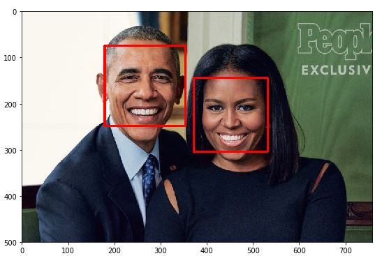
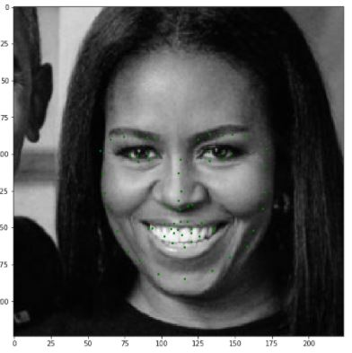
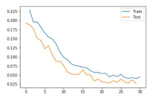

Facial Keypoint Tracker
What is the Keypoint tracker?
The Facial Keypoint tracker detects faces using Haar Cascades, and then neural network to identify 68 keypoints on each face. Once we are able to find these keypoints, it's easy to overlay filters. For this project, I put a simple sunglasses overlay, using keypoints around the eyes. Feel free to download and try it out, or swap the points and image to apply your preferred facial fun.
 Visit the repository to download and run this program. There are 2 sets of files to run this program. The first way is with the notebooks. These were written as part of the Udacity Computer Vision Nano-Degree. They include a bit of data-wrangling, training, and application. The second way is to run LiveFaceSearch.py, which uses the trained model for a Live demonstration. It will read from a webcam, extraction a face, overlaying points, and those stylin' shades.

Model and Data
The model used 5 convolutional layers, each with ReLU activation and pooling layers in between, before flattening the dense for a dense layer. Read models.py for details. The model was trained with an Adam Optimizer and MSE Loss.
The model was trained for on 5770 images from the YouTube Faces Dataset, using a 60/40 train/test split. The model was trained for 30 epochs.
Strengths and Weaknesses
The application does an excellent detecting faces quickly and consistently, using the Haar cascade. It identifies the face well, and generally places keypoints correctly. It is quite robust to changes in lighting, background and skin tone.
The main challenges are in picking up a wide variety of facial orientations and expressions. The Haar detector I'm using is explicitly trained for frontal views, "haarcascade_frontalface_default.xml", so that was well within expectations.
The model was trained on the YouTube Faces Dataset, and less than 4000 images were used for training. The model is definitely overfit to faces looking towards the camera, and making neutral expressions and smiles, since those are the expressions people make on camera. There are not a lot of goofy faces, so when you make a goofy face, it does not pick up the expression nearly as strongly as it should.
As with many models, collecting a broader dataset could help. Data augmentation might help a little as well. I'm already cropping randomly, but horizontal mirroring, and random scaling couldn't hurt. I just wouldn't expect a huge improvement, since neither of those will impact orientation of the head, or add much variety to the expressions.
- True Labels: Green
- Predictions: Red
View full source code on githubGitHub